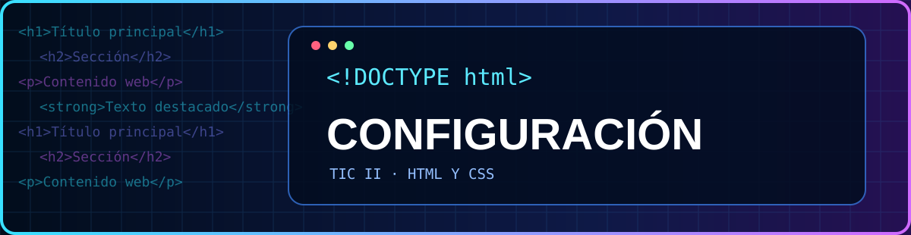
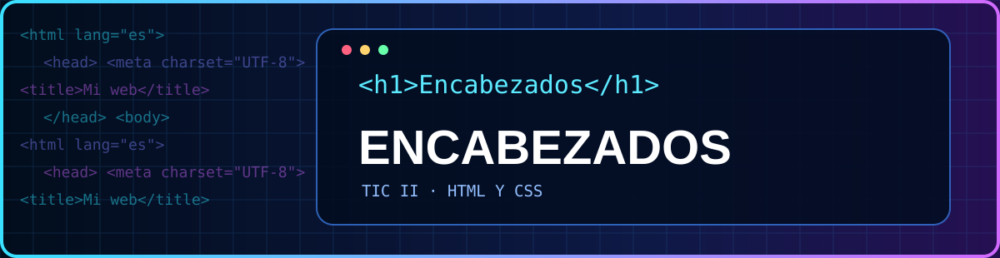
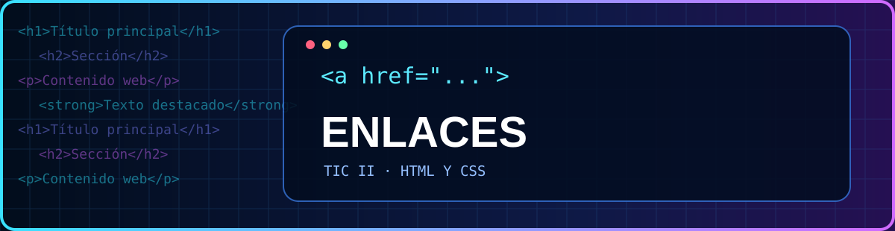
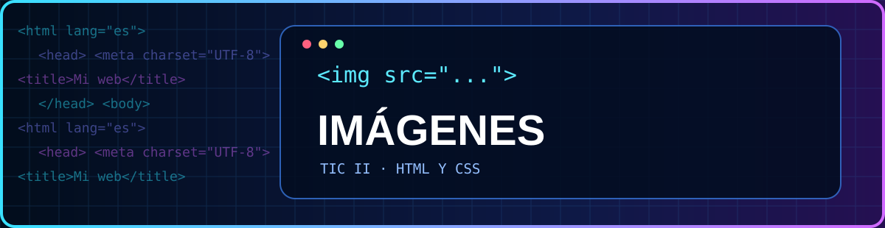
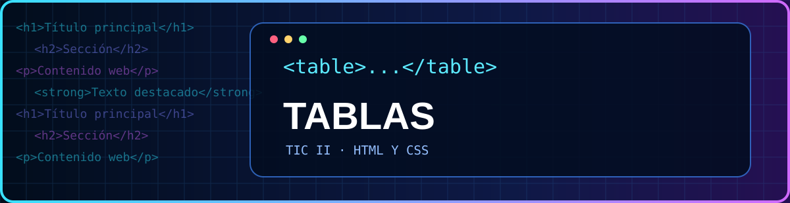
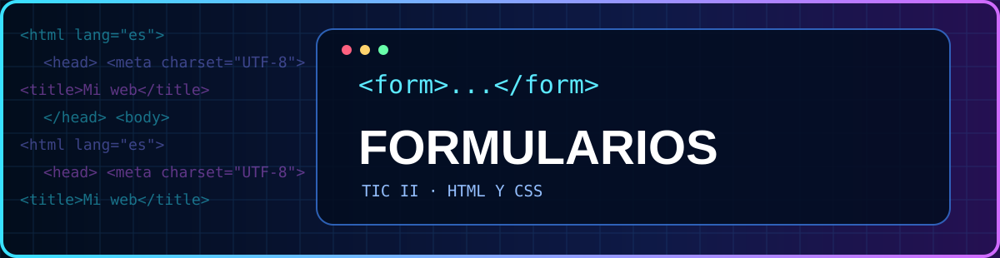
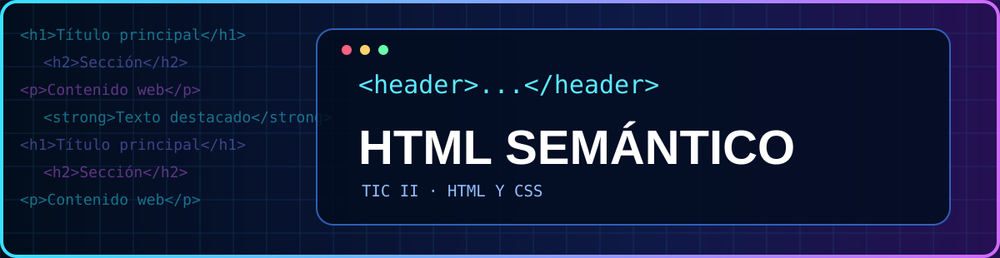
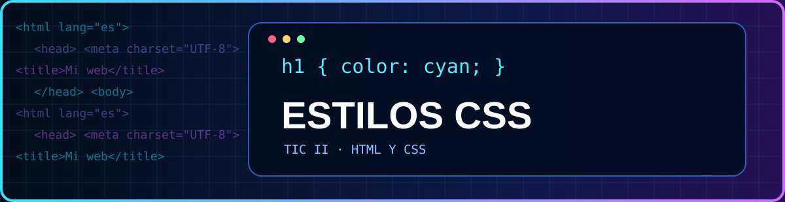

TIC II · 2.º BACHILLERATO · 1.º TRIMESTRE
Programación HTML y CSS2
Selecciona uno de los ocho apartados para estudiar la teoría, consultar ejemplos y practicar en el laboratorio de programación.
← Volver a TIC II Abrir laboratorio HTML y CSS →
APARTADO 01
Configuración inicial HTML
Estructura del documento y configuración básica.
Entrar al apartado →
APARTADO 02
Encabezados, párrafos y listas
Organización y formato de contenidos.
Entrar al apartado →
APARTADO 03
Enlaces y navegación
Enlaces internos y externos.
Entrar al apartado →
APARTADO 04
Imágenes y rutas de archivos
Inserción de imágenes y organización de carpetas.
Entrar al apartado →
APARTADO 05
Tablas HTML
Filas, columnas, encabezados y estilos.
Entrar al apartado →
APARTADO 06
Formularios HTML
Campos, etiquetas y controles.
Entrar al apartado →
APARTADO 07
HTML semántico
Estructura de una página con etiquetas semánticas.
Entrar al apartado →
APARTADO 08
CSS: estilos y diseño
Selectores, colores, tipografía y cajas.
Entrar al apartado →